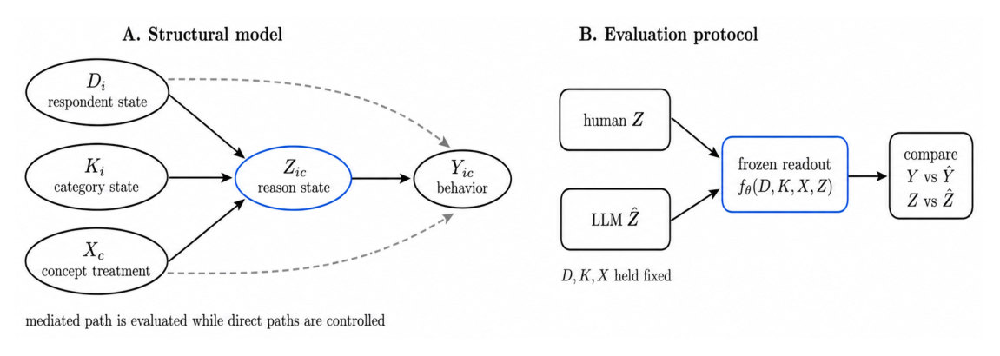
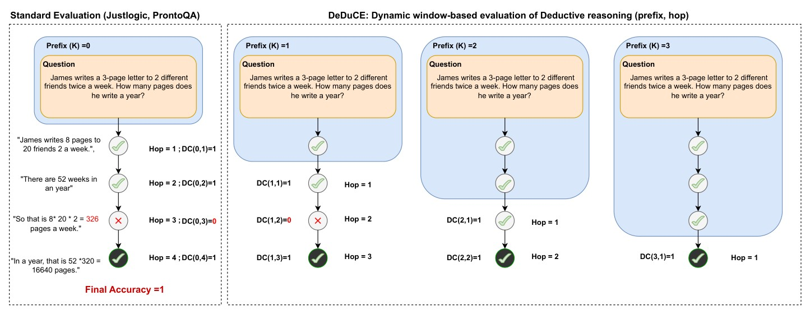
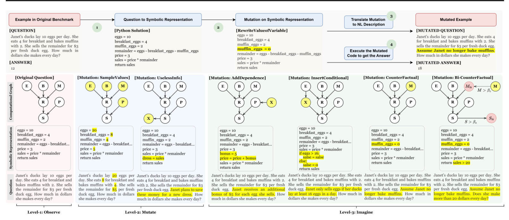
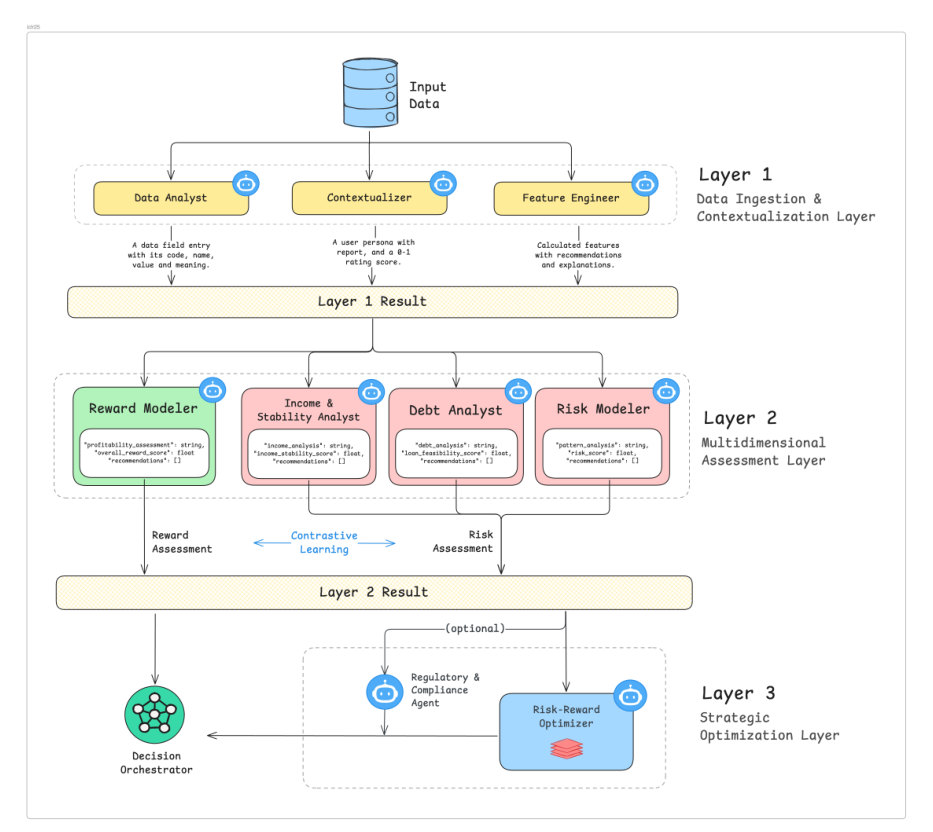
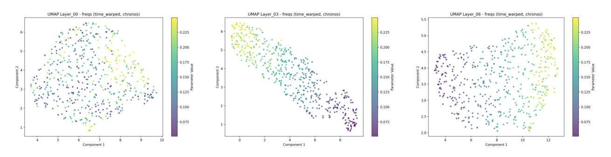
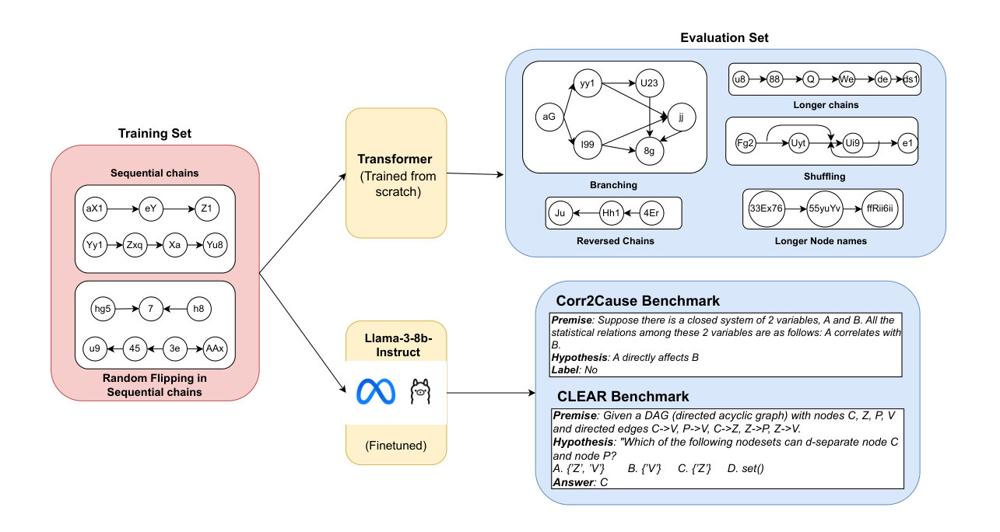

hi, I’m
Atharva Pandey
I work on how AI systems reason: testing where language models break, teaching transformers causality, and simulating how people respond. Co-founder of Kairosity.
Earlier: 3D vision and educational games.
About
games, geometry,
and now reasoning
Temporal reasoningCausalityReasoning3D computer visionGame-based learning
I like knowing why something works, which is probably why I keep drifting toward mathematics whatever the problem is. Most days that means poking at AI systems until I understand how they reason and, just as often, where that reasoning quietly falls apart.
I’m a co-founder of Kairosity, where we build simulations to understand human behaviour, agent behaviour, and how the two interact. That is also why I care so much about auditing such simulators by their reasons, not just their answers. On the research side I test where language models break (Re-Imagine, DeduCE), teach small transformers causal rules straight from axioms, and lately have been opening up time-series foundation models to see which layers hold which concepts. I’ve been lucky to write these with people like Amit Sharma and Gautam Jajoo.
Before that it was geometry. My first research was in 3D vision: rebuilding surfaces from noisy, partial scans (LISR, at AAAI 2024, with Vishal Yadav, Rajendra Nagar and Santanu Chaudhury), and we ran a challenge on restoring Indian heritage objects from exactly that kind of scan.
And before that, games. I still build them, and my very first papers were about using educational games to teach basic electronics.
I think best with a pen, so I explain things with drawings, hence the sketches on this site. If any of this overlaps with what you’re working on, I’d love to hear from you.
News
- Sep 2026New essay: The Shape of Information: from a Mars rover’s steering commands to Shannon’s entropy.
- Sep 2026Two new interactive explainers: why LISR works (and how it avoids getting stuck in a subspace), and where DeduCE finds LLM reasoning decaying.
- Jul 2026Reason-Mediated Behavioral Models for Auditing LLM Social Simulators accepted at the COLM 2026 Workshop on Social Simulation with LLMs. Post ↗
- Jun 2026Talk at Walmart Global Tech India (Bengaluru AI Meetup) with Gautam Jajoo: Multi-Agent Causal Forecasting in Production. Details · Post ↗
- Jun 20263rd place for Kairosity at Prophet Hacks, the ICML forecasting-workshop competition. Post ↗
Show older
- Feb 2026We released a first teaser of what we’re building at Kairosity. Post ↗
- Nov 2025On the internal semantics of time-series foundation models is on arXiv.
- Sep 2025Talk on Mamba at the Hidden Layers reading group, IIIT Bengaluru. Watch on YouTube ↗ · Details
- Jul 2025MASCA, a layered multi-agent system for credit assessment, is on arXiv.
- Jun 2025Re-Imagine at ICML 2025.
- Apr 2025DeduCE at the ICLR 2025 Workshop on Reasoning and Planning.
- Jul 2024Teaching transformers causal reasoning through axiomatic training on arXiv; later at ICML 2025.
- Mar 2024LISR published in the Proceedings of AAAI 2024.
Jul 2025 – now
Co-Founder, Kairosity
Self-employed · Bengaluru · Remote
Jul 2024 – Jul 2025
Research Fellow, Microsoft
Full-time · Bengaluru · On-site · Advisor: Dr. Amit Sharma
May – Aug 2023
Visiting Researcher, Carleton University
Internship · Ottawa, Canada · On-site
Education
2020 – 2024

Indian Institute of Technology Jodhpur
B.Tech in Computer Science, specialisation in Visual Computing.
Where my 3D-vision work began: LISR and the heritage-restoration challenge, with Rajendra Nagar and Santanu Chaudhury.
Coursework: Data Structures & Algorithms · Pattern Recognition & Machine Learning · Maths for Computing · Probability, Statistics & Stochastic Processes · Signals & Systems · Foundations of Quantum Information
Latest blogs
interactive, and mostly drawings
Why LISR works: local pieces, full rank
Why gradient descent gets stuck in a subspace, and how Voronoi cells and a query-selection rule get it out. Three interactive 3D figures, plus the paper’s own.
ExplainerAAAI 2024

Do language models reason, or just remember? Count the hops
A full walkthrough of the paper: grade a chain of thought like a proof, and watch consistency decay with hops rather than premises.
ExplainerDeduCE
The Shape of Information
A walk from a Mars rover’s steering commands to Shannon’s entropy.
EssaySubstack
Work
ten papers, ten sketches. Hover a figure to watch the paper explained.
Figure from the paper. Hover to see it explained.



Figure from the paper. Hover to see it explained.


Hover to play the sketch.
Hover to play the sketch.
Hover to play the sketch.